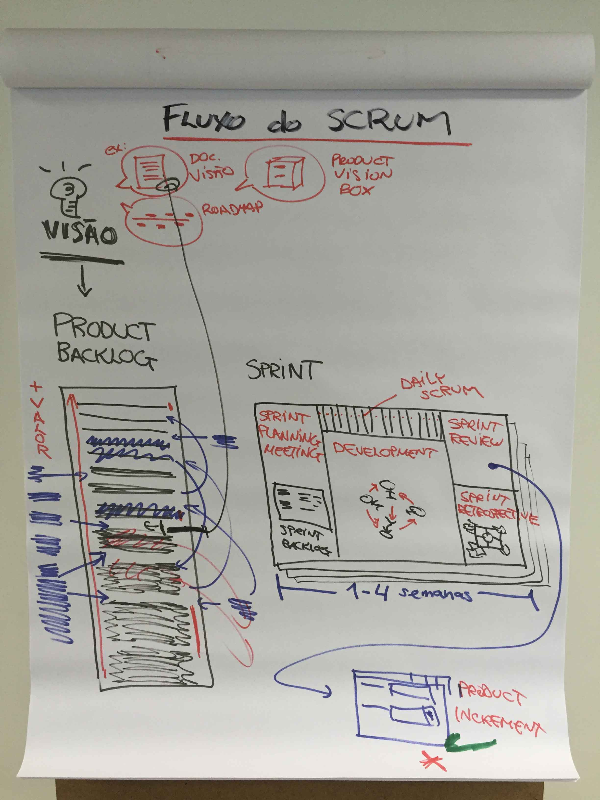
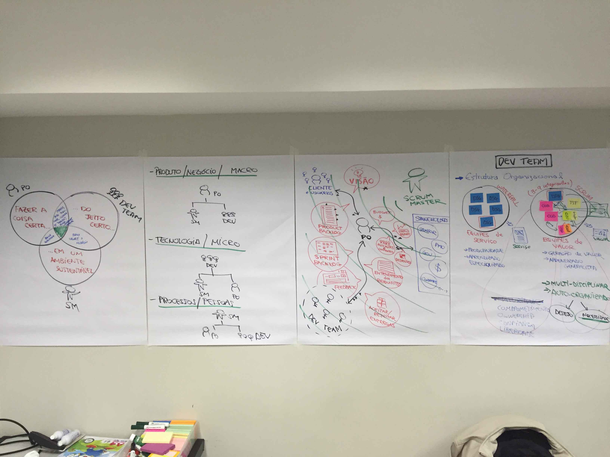
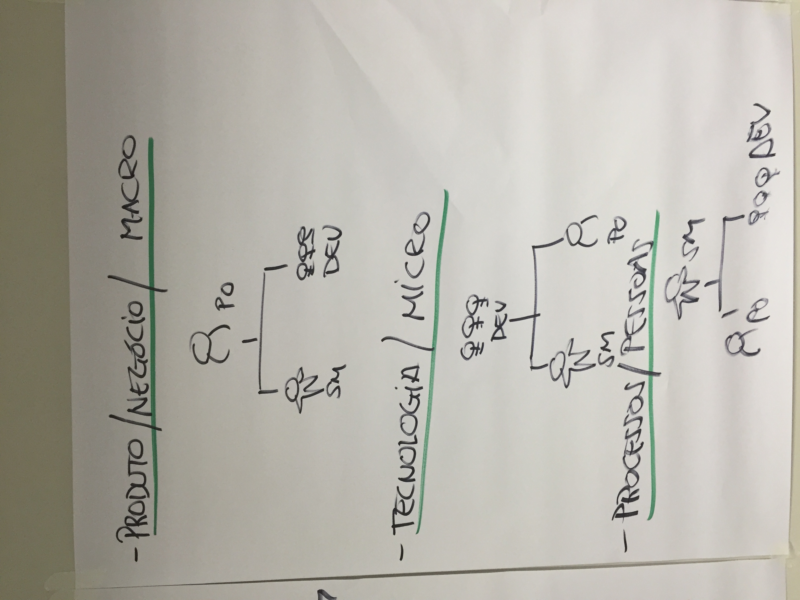
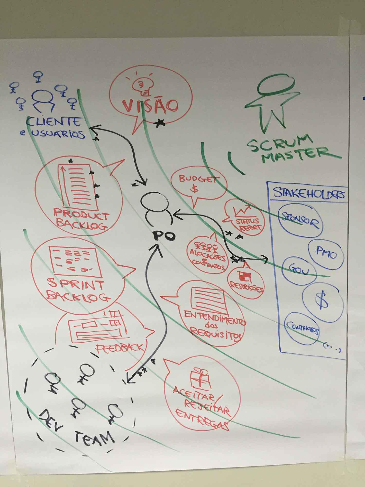
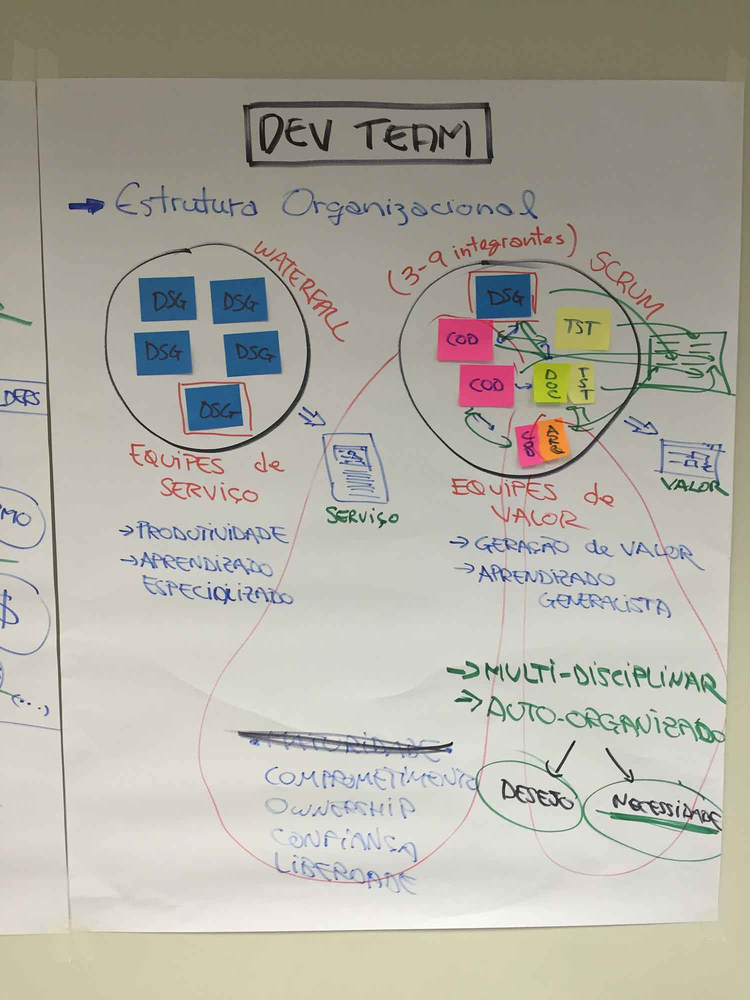
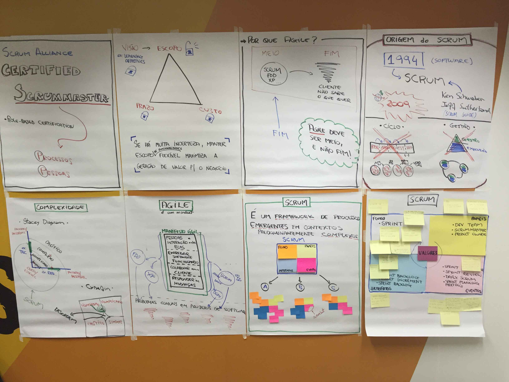
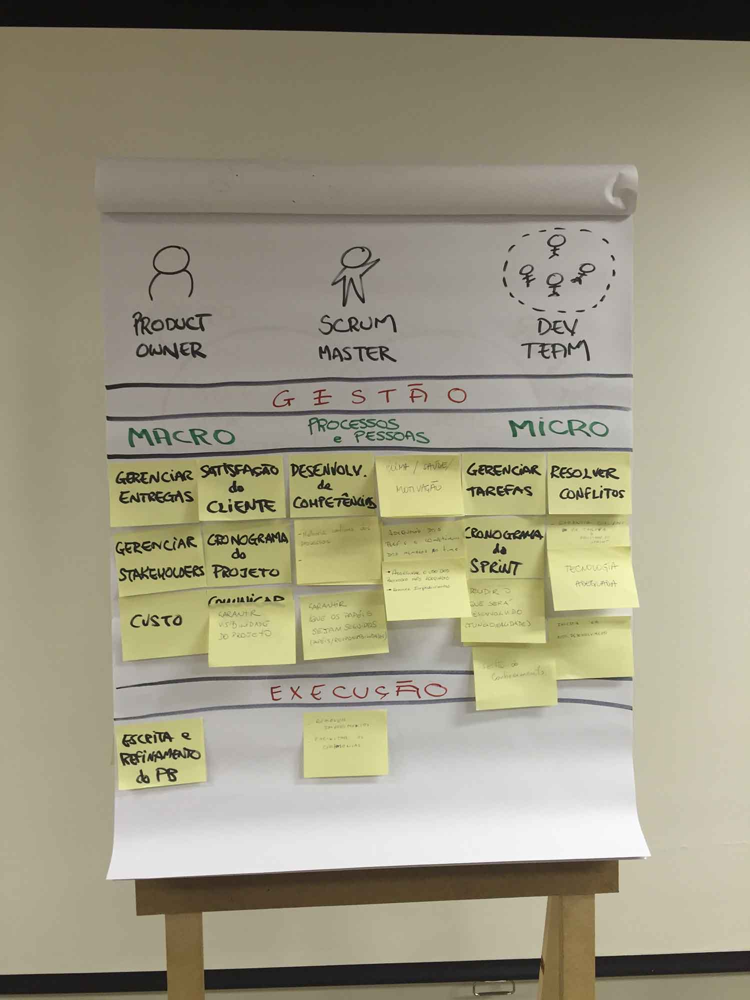
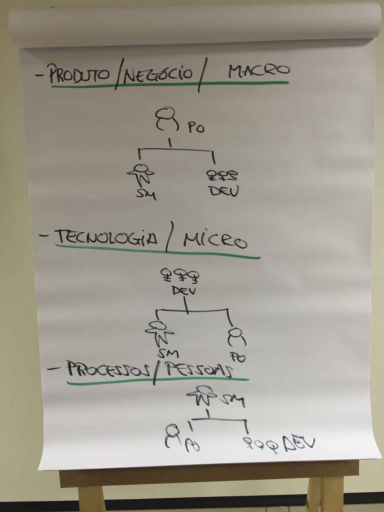

Dia 1 - CSM - ScrumAlliance - AdaptWorks
Anotações do curso de certificação de Scrum Master da Scrum Alliance, pela AdaptWorks, ministrado pelo Alexandre Magno. Veja as anotações do segundo dia de curso.
Dia 1
- Todas as atitudes do Scrum Master são direcionadas com o jeito com que o time está trabalhando, e com o ambiente no qual estão fazendo isso
- Temos processos adequados para nossas pessoas tirarem o máximo de valor para clientes, stakeholders, etc?
- Foco em Processos e Pessoas.
- scrum master não tem como base se o produto é certo ou nao.
- Ele também não está cobrindo a área tecnológica
- projetos ágeis são projetos com tempo fixo
- como SM você precisa confiar na sua equipe para que eles produzam melhor, seguindo seu próprio estilo, sem um modelo imposto, respeitando a complexidade do projeto e suas restrições
- os desenvolvedores precisam ter uma visão clara do objetivo, e o escopo depende de objetivo pra objetivo
- em um projeto normal existe escopo, prazo e custo
- Na forma tradicional, fixamos os três pontos. Mas no Scrum nós trabalhamos com prazo fixo, custo fixo e escopo flexível, aberto e incremental
- O escopo precisa ter uma visão ligada a ele. Uma visão macro, um objetivo. O que o cliente vai ganhar no final? Qual a estrutura de visão do produto? São definições macro do produto, que deverão ficar fechados.
- O escopo é flexível, mas você não pode mudar no meio do caminho o objetivo macro do projeto/história
- o fato do time não saber o que vai fazer e como fazer nos próximos dias, não quer dizer que o escopo vai ser modificado ou o projeto vai atrasar.
- Mas como garantimos isso? Por que esse processo é o plano vai se adaptar de acordo com a variação do projeto
- FDD - Feature Driven Development
- métodos ágeis não são o fim, empresas que não admitem seus próprios problemas em processos, pessoas e clientes, falharão usando Agile
- Muitas empresas praticam um Agile fake, com grandes falhas
- Identifique quais os problemas que você tem no seu projeto
- se há muita incerteza nas definições, manter escopo de funcionalidades flexível maximiza a geração de valor para o negocio
- Ter requisitos estáveis significa que eles continuarão imutáveis por bastante tempo, dessa forma Você consegue medir a complexidade do ambiente
Origem do Scrum
- 1994: nascimento do Scrum
- começou a ficar mais popular só lá na frente, nos anos 2001, 2002, 2003, mas estourou mesmo em 2009 por que em 2008 teve uma crise econômica imobiliária
- Onde aprendemos sobre incertezas e planejamentos a longo prazo
- scrum fala que no máximo em 1 mês você precisa entregar incrementos do projeto
- Isso na década de 90 era um horror por causa das tecnologias existentes
- Hoje, com a tecnologia avançada, conseguimos criar produtos mais modulares, o que facilitou a vida de quem usa scrum
- outro ponto era que o mercado não achava que o problema da não entrega do software, era do método, mas das pessoas
- scrum é só para desenvolvimento de software? Não, hoje em dia há empresas relacionadas a manufatura e negócios que usam o scrum
- Mas o scrum nasceu no desenvolvimento de software, ele nasceu para software
- Os criadores de chamam Ken Schwaber e Jeff Sutherland
- Scrum é uma jogada do Rugby para retomar a posse de bola, isso é uma jogada que depende muito da auto-organização da equipe
- Conceito de auto-organização
- naquele tempo, todos os métodos para desenvolvimento de software, eram baseados no método waterfall, que vem do modelo industrial, linha de produção, onde se pega todo o trabalho que existe, divide em especialização e divide em fases
- O Scrum se baseia num processo interativo e incremental, onde em cada interação, temos certeza de que temos todas as especialidades para entregar um incremento funcional.
- Como cada interação tem todas as especialidades para criar um pedaço do projeto por inteiro, é possível entregar pedaços funcionais do projeto, em um escopo flexível, mas com tempo de entrega definido
- Antigamente os métodos eram baseados em uma gestão centralizada. Quem faz gestão não executa e quem executa não faz gestão, vem do modelo de Taylor, onde o que você tinha na execução aquela pessoa que dava a “mão de obra”
- Gestão e execução são situacionais. Há um tempo no projeto que você precisa fazer mais ou menos gestão do projeto e outras que precisa se concentrar na execução
- O scrum tenta misturar os dois, em cada um dos ciclos de desenvolvimento
- não adianta ter equipes multidisciplinares se você não compartilha a gestão.
- Não adianta utilizar scrum se seu fluxo ainda é waterfall
- Não adianta usar scrum se você tem um gerente cobrando entregas e produtividade em cima do time de desenvolvimento
Complexidade
- Tamanho não é a medição mais adequada para se decidir se vai ou não vai usar Scrum.
- A forma mais adequada é o nível de complexidade do seu projeto. Eles se basearam na Teoria da Complexidade
- O que significa Complexidade? Complexidade não quer dizer difícil. Complexidade tem a ver com incerteza, com instabilidade. Algo é mais simples, quando é certo ou estável.
- Existem vários frameworks no campo científico qua ajudam a discutir esse assunto. Um deles é o Stacey Diagram.
- Quanto mais difícil a gestão por causa da instabilidade e incerteza do projeto, mais você pode descentralizar a gestão
- Scrum foi criado para contemplar projetos fortemente complexos, mas que não chega a ser caótico
- Normalmente confundimos caos com desordem. Caos quer dizer que temos um ambiente imprevisível, mas não desorganizado. Um pronto socorro é um ambiente caótico, mas imprevisível.
- Cynefin Framework. Divide o ambiente em complexo, complicado, caótico e simples. No meio fica a desordem.
- Na Sprint você tem mais estabilidade e conhecimento do que você tem no seu projeto. Isso é normal.
- Não faz sentido usar scrum para Projetos com escopo fechado, arquitetura já definida. Se você já tem um escopo definido e uma arquitetura conhecida, você tem um projeto simples, talvez um pouco complicado.
- Em projetos com uma stack e um escopo bem conhecido e definido, talvez os modelos de Waterfall seja o modelo mais acertado para esses projetos.
- Entregar valor rápido para o cliente, é um efeito colateral e não um objetivo. Você não usa Scrum para entregar mais rápido.
- Mas quanto mais rápido você entrega valor para o cliente, você está sujeito a mais mudanças, porque o cliente reage, o PO reage, o UX reage a estas entregas.
- Somos ágeis para responder a mudanças de um ambiente de incertezas
- Uma empresa de Games não podem entregar para o cliente metade de um jogo. Eles podem trabalhar com scrum e entregas incrementais, mas só vai entregar para o cliente quando o game estiver totalmente completo.
- O topo do backlog do produto precisa ser as histórias estáveis, conhecidas, para que possamos diminuir o nível de incertezas e instabilidades do projeto.
- Você decide se vai ou não usar scrum de acordo com o nível de incerteza do seu projeto
Agile
- Agile não é uma metodologia ou ferramenta. Agile é um mindset. Está mais relacionado a comportamento do que método.
- Valores Agile
- Pessoas e interações entre elas. Você precisa ter um ambiente que valorize as pessoas, por que são as pessoas que serão determinantes no sucesso do projeto. Facilite a comunicação entre as pessoas.
- Entregar software funcionando. É isso que gera valor. Não se dê o luxo de ficar 3 meses escrevendo documentação. O mindset ágil diz que a entrega de valor é entrega software funcionando o quanto antes.
- Colaboração com o cliente. Colaborar não é ser bonzinho. Colaborar é no sentido de trabalhar junto com o cliente. Não dá para dizer que você é ágil se o seu padrão de trabalho é separar o cliente durante o desenvolvimento do projeto.
- Responda à mudanças. Quem tem mindset ágil sabe que mudanças vão acontecer durante todo o projeto. Precisamos estar preparados para responder à mudanças de forma rápida.
- Métodos ágeis são os princípios do mindset agile que materializam os valores Agile, fazendo com que esses valores não sejam mais um mantra, mas virem prática
O que é Scrum?
- Scrum é um framework de processos emergentes em contextos predominantemente complexos.
- Scrum é um framework. Scrum não é uma metodologia.
- Scrum é baseado em Fluxo, Papéis, Artefatos, Cerimônias.
- Metodologias são prescritas, ou seja, ela diz exatamente como você precisa seguir. Um framework também não é tão fácil de se alterar, mas você pode montar coisas em cima.
- Metodologia está completa. Ela se vende como algo que está completo. É só implantar e usar. Um Framework se vende como incompleto, você vai precisar completá-lo, ele não acreditar ter o suficiente para o que você precisa.
- Framework não é Ready to use. Por definição Scrum é incompleto, não por falha ou erro, mas por conceito.
- Ele não define l que você precisa fazer (planejamento, documentação etc), por que ele não sabe o que será bom pra você. Ele deixa que essas decisões fiquem na sua mão, adequando de acordo com a sua necessidade.
- Por exemplo: scrum não te fala como se estima projeto. O cara que entendeu o scrum como framework, entende que para estimar um projeto, depende do contexto e ele vai escolher qual a melhor solução/técnica para estimar projetos.
- O Scrum também não diz como escrever requisitos, histórias etc. Para quem não conhece framework, diz que Scrum não escreve requisitos, o negócio é falar mesmo. Mas o que já conhece o conceito, decide que é melhor, para aquele projeto, usar User Case. Ou User Story em outro cenário.
- O pior Scrum Master do mundo é aquele que só conhece Scrum.
bases do processo Scrum
- fluxo: O scrum se baseia no conceito de Sprint
- O sprint é a forma com que o scrum expressa o ciclo incremental de trabalho
- em papéis, temos 3: dev Team, Product Owner e Scrum Master
- Artefatos: sprint Backlog, Product increment e Product Backlog
- Eventos: sprint planning, Daily meeting, sprint review, sprint retrospective
- E em seus valores temos os valores do manifesto ágil.
- Essa é estrutura pra se desenvolver o mindset Agile
Papéis
- A gestão de um projeto scrum é feita por três personagens: Product Owner, Scrum Master e Dev Team.
- o Product Owner não se preocupa ou não em fazer gestão se preocupando se o objetivo da sprint vai ser alcançado, se as tarefas estão no prazo, quais os riscos da sprint. Ele vê o macro, vê o projeto, risco do produto.
- O que for micro gestão, fica com o Development Team. Quem tem que estar preocupado com os riscos da sprint é o dev Team, o prazo, entregas e etc.
- PO é macro gestão, Development Team é Micro Gestão.
- Processos e Pessoas fica com o Scrum Master. Ele está preocupado todas as peculiaridades do time e do projeto, e propõem soluções para melhorar a produtividade do time
- Scrum Master precisa ter pensamento de processo. Se está errado, é por que o processo está errado e não por que o time é ruim
- Não é o time que é acomodado, é o processo que está falhando em aumentar o senso de urgência.
- Processos são feitos para as pessoas entregarem melhor, se comunicarem melhor, trabalharem melhor.
- o super poder do Scrum Master é se colocar no outro, ele precisa gostar de gente.
- Quem vai levar porrada do PO se o sprint não for finalizado, é o Development Team.
- fazer a coisa certa, do jeito certo, em um ambiente sustentável.
- PO garante que está fazendo a coisa certa
- Dev Team garante o jeito certo
- Scrum Master garante o ambiente sustentável
- Alma do Scrum são os valores
- Corpo são os fluxos, eventos, papéis e artefatos
- Não dá pra ter só corpo ou só alma, precisa ter os dois juntos.
- Ter os papéis do Scrum são a coisa mais importante pra ter uma transição pro Agile
- Corpo sem alma é zumbi, alma sem corpo é fantasma.
Product Owner
- PO gerencia as entregas, por que foi ele que acertou a entrega com o time
- ele que combina o que vai e o que não vai entrar no sprint
- satisfação do cliente é uma responsabilidade do PO. Por que é o cara que prioriza o que vai ou não ser feito é que detém a tomada de decisão
- gestão dos stakeholders
- Cronograma do projeto PO
- Custo
- Comunicar prazos do projeto
Scrum Master
- Desenvolvimento de competências. Se o time não está maduro para o processo, é dever do SM desenvolver essa competência no time
- retira impedimentos do processo.
- Facilitador
- Retirar impedimentos
- Dar ao Product Owner processos que o ajudem a dar mais visibilidade do projeto
- qualquer coisa relacionada aos processos, scrum e Agile, é o Scrum Master que precisa ensinar para os pares
Dev Team
- gerencia tarefas. Isso significa que nas sprints é dia a dia, eles discute entre eles quem tem mais habilidade pra fazer cada tarefa
- são responsáveis se as tarefas vão ser entregues no dia, atrasos e etc
- Resolução de conflitos entre pessoas do time. Qualquer resolução deveria surgir do próprio time
- o time decide o que é impedimento ou não
- cronograma da sprint
- qualidade de entrega das tarefas
Hierarquia
- Hierarquia no scrum é situacional, ela não é definitiva
- PO precisa bater no Dev Team, questionando sobre as entregas e problemas nas tarefas do produto
- Se o assunto for tecnologia/micro gestão, Dev Team é que decide e manda
- Se for processos e pessoas, é o scrum master que comanda
- Scrum é contra a liderança fixa, por que uma pessoa que não é boa em todos os assuntos deverá tomar decisões sobre tudo
Imagens de apoio
       